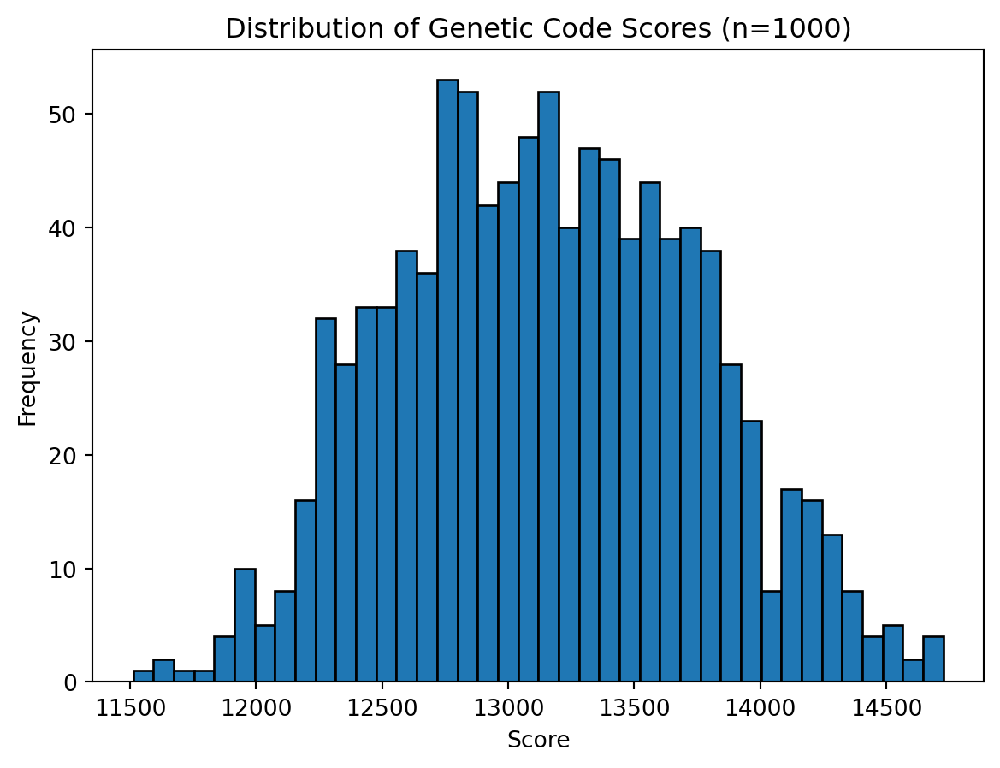
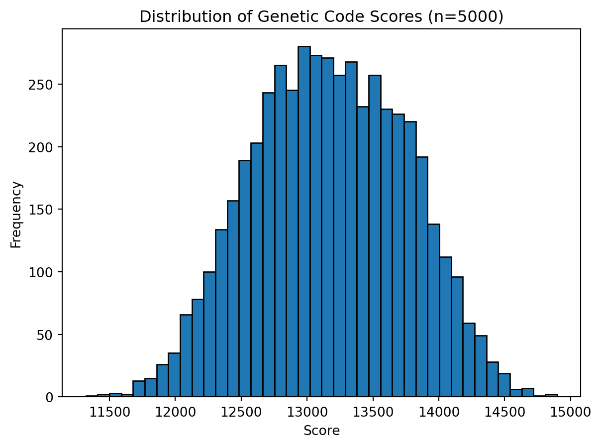
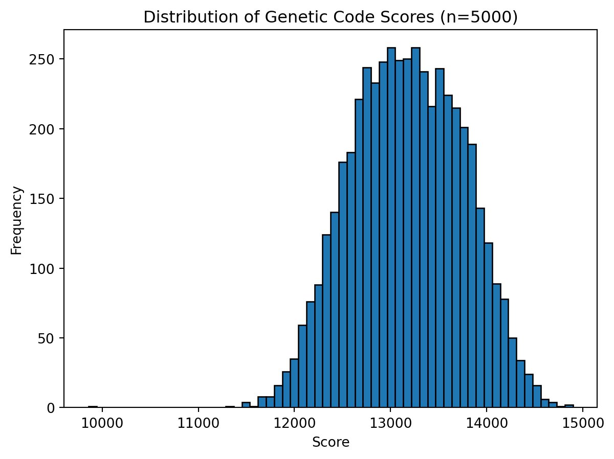
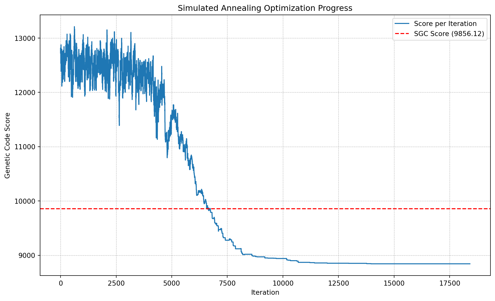

import sys
import statistics as stats
import pandas as pd
import numpy as np
import random
from itertools import product
import matplotlib.pyplot as plt
BASE_DIR = "~/Documents/School/CSB195"
STOP_CODON_LIMIT = 3
SGC = {
'ATA': 'I', 'ATC': 'I', 'ATT': 'I', 'ATG': 'M',
'ACA': 'T', 'ACC': 'T', 'ACG': 'T', 'ACT': 'T',
'AAC': 'N', 'AAT': 'N', 'AAA': 'K', 'AAG': 'K',
'AGC': 'S', 'AGT': 'S', 'AGA': 'R', 'AGG': 'R',
'CTA': 'L', 'CTC': 'L', 'CTG': 'L', 'CTT': 'L',
'CCA': 'P', 'CCC': 'P', 'CCG': 'P', 'CCT': 'P',
'CAC': 'H', 'CAT': 'H', 'CAA': 'Q', 'CAG': 'Q',
'CGA': 'R', 'CGC': 'R', 'CGG': 'R', 'CGT': 'R',
'GTA': 'V', 'GTC': 'V', 'GTG': 'V', 'GTT': 'V',
'GCA': 'A', 'GCC': 'A', 'GCG': 'A', 'GCT': 'A',
'GAC': 'D', 'GAT': 'D', 'GAA': 'E', 'GAG': 'E',
'GGA': 'G', 'GGC': 'G', 'GGG': 'G', 'GGT': 'G',
'TCA': 'S', 'TCC': 'S', 'TCG': 'S', 'TCT': 'S',
'TTC': 'F', 'TTT': 'F', 'TTA': 'L', 'TTG': 'L',
'TAC': 'Y', 'TAT': 'Y', 'TAA': '*', 'TAG': '*',
'TGC': 'C', 'TGT': 'C', 'TGA': '*', 'TGG': 'W',
}Report 1
Comparing alternative genetic codes to the Standard Genetic Code
Last updated October 7, 2025.
1 Overview
The goal of this project is to compare the Standard Genetic Code with randomly generated alternatives of the code. I had a lot of fun with this and I find it very interesting to see how the SGC is very optimized when compared to other randomly generated code.
2 Specification
My final specification is below, I will summarize it briefly underneath.
The goal of this project is to compare the Standard Genetic Code (SGC) to other, randomly generated codes that are biologically plausible. We will do so by the following general specification. Variables: - BASE_DIR = base directory of project - aaSimilarity = PCAs of amino acid similarities - dtable = lookup table of single letter amino acids showing distance from each other - SGC = standard genetic code of form: {'CODON': "AMINO ACID"} where amino acids are in single letter form Functions: - ALREADY BUILT! construct_aa_table(dat: pd.DataFrame) -> pd.DataFrame - Constructs a pandas dataframe from imported csv stored in aaSimilarity, containing a 21x21 matrix of Euclidean distances between amino acids The function calculates the distance between 20 standard amino acids based on 12 principal components and adds a 'STOP' codon. - ALREADY BUILT! aaSim(aa1: str, aa2: str) -> np.float64 - Looks up the values in the dataframe constructed earlier in `dtable` and returns the applicable stored distance between aa1, aa2; amino acids - create_genetic_code(sc_limit: int) -> dict - Creates a random genetic code config that maps all 64 codons to all 20 amino acids (in single letter form) + at least one stop codon (allow 1-`sc_limit` stop codons). Return as a python dict e.g. {'ATA': 'A', 'ATT': 'W'} - score_gc(gc: dict) -> np.float64 - Provides a 'score' of the provided genetic code in `gc`. It must calculate the cost of every possible codon mutation (3 codon mutations per 3 codons), then use aaSim() between the gc-mapped amino acid of the original codon and the gc-mapped amino acid of the mutated codon to determine what the distance between each mutation is. Sum up the distances of every possible mutation and return as np.float64
3 Setting Up the Environment
3.1 Some constants
I import some packages and add some constants to begin. STOP_CODON_LIMIT determines the max of how many stop codons the generator will try to assign.
3.2 Importing the data
Since the original data was in .Rds format, I used R’s write.csv() command to export
dat/aaFeatureSpace.2025.Rdstodat/aaFeatureSpace.csvPython accesses this data and constructs a similarity lookup table using the following code:
Show the code
def construct_aa_table(dat: pd.DataFrame) -> pd.DataFrame: """ Constructs a 21x21 matrix of Euclidean distances between amino acids. The function calculates the distance between 20 standard amino acids based on 12 principal components and adds a pseudo 'STOP' codon. Args: dat: A pandas DataFrame with amino acid single-letter codes as the index and 12 principal components (PC1-PC12) as columns. Returns: A 21x21 pandas DataFrame containing the Euclidean distances between all 20 amino acids and a 'STOP' codon. """ # --- FIX --- # Ensure that the dataframe values are numeric before calculations # This prevents the TypeError during vector subtraction. dat_numeric = dat.apply(pd.to_numeric, errors='coerce') # It's good practice to check if coercion created any NaN values if dat_numeric.isnull().values.any(): print("Warning: Non-numeric values were found and converted to NaN.") # Define the constant for calculating the distance to the stop codon STOP_DIST = 1.5 # Extract the list of amino acids from the input DataFrame's index amino_acids = dat_numeric.index.tolist() # Initialize an empty square DataFrame to hold the distances dist_matrix = pd.DataFrame(index=amino_acids, columns=amino_acids, dtype=float) # Calculate the Euclidean distance for each pair of amino acids for aa1 in amino_acids: for aa2 in amino_acids: # Retrieve the 12-dimensional vectors for the two amino acids vec1 = dat_numeric.loc[aa1].values vec2 = dat_numeric.loc[aa2].values # Compute the Euclidean distance and store it in the matrix distance = np.linalg.norm(vec1 - vec2) dist_matrix.loc[aa1, aa2] = distance # Find the maximum distance value among the amino acids max_dist = dist_matrix.values.max() # Calculate the distance for the stop codon stop_codon_dist = STOP_DIST * max_dist # Add a 'STOP' column and row to the matrix stop_label = '*' dist_matrix[stop_label] = stop_codon_dist dist_matrix.loc[stop_label] = stop_codon_dist # The distance from 'STOP' to itself is 0 dist_matrix.loc[stop_label, stop_label] = 0.0 return dist_matrix aaSimilarity = pd.read_csv(f"{BASE_DIR}/dat/aaFeatureSpace.csv", index_col=0) dtable = construct_aa_table(aaSimilarity)Now the lookup table is constructed nicely and stored in
dtable:dtableA C D E F G H I K L ... N P Q R S T V W Y * A 0.000000 18.176334 21.211890 21.923157 22.371972 11.482274 18.900629 19.645559 27.036963 17.392675 ... 18.462433 19.083326 19.461327 29.894757 10.715891 10.600212 14.435550 28.323295 23.341264 53.935761 C 18.176334 0.000000 28.319709 29.728459 20.041857 25.054519 21.739702 17.581695 33.867608 17.658081 ... 25.926758 27.312201 27.016538 33.663847 22.000385 20.114841 13.842399 25.908648 22.289136 53.935761 D 21.211890 28.319709 0.000000 7.859468 32.456299 23.219087 18.435790 32.599804 18.891600 30.707916 ... 11.938848 20.851585 11.273871 21.535519 13.592779 15.809162 28.758401 33.169889 25.982454 53.935761 E 21.923157 29.728459 7.859468 0.000000 31.412447 25.289262 17.162447 31.094875 15.017994 28.952665 ... 12.332626 22.363162 8.935904 18.980827 16.066922 17.324399 27.976748 31.759465 24.054114 53.935761 F 22.371972 20.041857 32.456299 31.412447 0.000000 31.582276 21.746057 11.326064 34.060936 9.293158 ... 28.611496 28.291862 27.837117 32.524010 27.225385 23.223101 14.060650 12.321010 14.091799 53.935761 G 11.482274 25.054519 23.219087 25.289262 31.582276 0.000000 25.097377 28.775849 30.197159 27.214751 ... 20.767591 20.145725 23.307118 33.426858 13.828360 17.115369 23.954105 35.957174 30.544664 53.935761 H 18.900629 21.739702 18.435790 17.162447 21.746057 25.097377 0.000000 23.465681 20.076748 21.236117 ... 14.913534 20.765900 14.389646 19.461579 16.819221 15.078192 20.613181 22.622245 15.307727 53.935761 I 19.645559 17.581695 32.599804 31.094875 11.326064 28.775849 23.465681 0.000000 34.227760 6.733640 ... 28.616005 27.744302 28.779372 34.776820 26.230282 22.495364 7.080977 19.449383 19.319285 53.935761 K 27.036963 33.867608 18.891600 15.017994 34.060936 30.197159 20.076748 34.227760 0.000000 32.194150 ... 17.420960 23.411609 12.381269 16.471912 20.806245 20.609675 31.602886 32.079634 25.243565 53.935761 L 17.392675 17.658081 30.707916 28.952665 9.293158 27.214751 21.236117 6.733640 32.194150 0.000000 ... 27.084261 25.801083 26.292854 32.900377 24.287408 20.874809 8.152492 18.577124 16.909402 53.935761 M 17.359260 15.066169 27.880345 26.681749 11.131475 27.144879 17.351416 13.573533 29.369891 8.799197 ... 24.597132 24.960747 23.340748 29.676611 22.260555 19.448368 12.687781 17.599251 15.416300 53.935761 N 18.462433 25.926758 11.938848 12.332626 28.611496 20.767591 14.913534 28.616005 17.420960 27.084261 ... 0.000000 19.324180 7.580542 19.788073 10.776410 13.261159 25.619874 29.981411 22.550224 53.935761 P 19.083326 27.312201 20.851585 22.363162 28.291862 20.145725 20.765900 27.744302 23.411609 25.801083 ... 19.324180 0.000000 20.001033 28.278856 16.696112 17.105724 24.659890 30.363342 24.694739 53.935761 Q 19.461327 27.016538 11.273871 8.935904 27.837117 23.307118 14.389646 28.779372 12.381269 26.292854 ... 7.580542 20.001033 0.000000 16.300134 12.449408 13.382975 25.742964 28.484868 20.051376 53.935761 R 29.894757 33.663847 21.535519 18.980827 32.524010 33.426858 19.461579 34.776820 16.471912 32.900377 ... 19.788073 28.278856 16.300134 0.000000 24.334498 23.602768 32.849640 31.215589 24.343017 53.935761 S 10.715891 22.000385 13.592779 16.066922 27.225385 13.828360 16.819221 26.230282 20.806245 24.287408 ... 10.776410 16.696112 12.449408 24.334498 0.000000 6.167702 21.321638 30.880924 23.941856 53.935761 T 10.600212 20.114841 15.809162 17.324399 23.223101 17.115369 15.078192 22.495364 20.609675 20.874809 ... 13.261159 17.105724 13.382975 23.602768 6.167702 0.000000 17.554950 27.092283 20.496910 53.935761 V 14.435550 13.842399 28.758401 27.976748 14.060650 23.954105 20.613181 7.080977 31.602886 8.152492 ... 25.619874 24.659890 25.742964 32.849640 21.321638 17.554950 0.000000 22.190822 19.065321 53.935761 W 28.323295 25.908648 33.169889 31.759465 12.321010 35.957174 22.622245 19.449383 32.079634 18.577124 ... 29.981411 30.363342 28.484868 31.215589 30.880924 27.092283 22.190822 0.000000 14.294620 53.935761 Y 23.341264 22.289136 25.982454 24.054114 14.091799 30.544664 15.307727 19.319285 25.243565 16.909402 ... 22.550224 24.694739 20.051376 24.343017 23.941856 20.496910 19.065321 14.294620 0.000000 53.935761 * 53.935761 53.935761 53.935761 53.935761 53.935761 53.935761 53.935761 53.935761 53.935761 53.935761 ... 53.935761 53.935761 53.935761 53.935761 53.935761 53.935761 53.935761 53.935761 53.935761 0.000000 21 rows × 21 columns
3.3 Generator and Scorer
Now we can define the generator function with the following:
Show the code
def create_genetic_code(sc_limit: int) -> dict: """ Creates a random genetic code config that maps all 64 codons to all 20 amino acids and at least one stop codon. Args: sc_limit: The maximum number of stop codons allowed (the actual number will be chosen randomly between 1 and sc_limit). Returns: A dictionary mapping each of the 64 codons to a single-letter amino acid code or a stop codon ('*'). Raises: ValueError: If sc_limit is not within a reasonable range (1 to 10). """ # Validate the stop codon limit to a sensible range if not 1 <= sc_limit <= 10: raise ValueError("sc_limit must be between 1 and 10 for practical genetic codes.") # Define the building blocks for the genetic code bases = ['A', 'T', 'G', 'C'] amino_acids = list("ACDEFGHIKLMNPQRSTVWY") # 20 standard amino acids stop_symbol = '*' # 1. Generate all 64 possible codons all_codons = [''.join(p) for p in product(bases, repeat=3)] random.shuffle(all_codons) # 2. Determine the number of stop codons num_stop_codons = random.randint(1, sc_limit) # 3. Create the pool of assignments (amino acids + stops) # Ensure all 20 amino acids are present at least once assignments = amino_acids.copy() # Add the stop codons assignments.extend([stop_symbol] * num_stop_codons) # Fill the remaining slots with random amino acids to reach 64 total assignments remaining_slots = 64 - len(assignments) assignments.extend(random.choices(amino_acids, k=remaining_slots)) # Shuffle the assignments to ensure randomness random.shuffle(assignments) # 4. Create the dictionary by mapping codons to assignments genetic_code = dict(zip(all_codons, assignments)) return genetic_codeAnd we can see that running this function generates us a nice randomly assigned genetic code:
test_code = create_genetic_code(2) # with max 2 stop codons pd.DataFrame([test_code]) # display nicelyATA GTT AGA CTA TAT CGC CCT CGT TGC TAA ... CGA GAA CAT ATC GCG ACG GAT TCA ACA TAC 0 Y I W * M G Y E G H ... E W K N T I A A F Y 1 rows × 64 columns
Next is the scorer function, defined as follows:
Show the code
def score_gc(gc: dict) -> np.float64: """ Calculates a 'robustness' score for a genetic code. The score is the sum of physicochemical distances between amino acids resulting from all possible single-nucleotide point mutations across all 64 codons. A lower score indicates a more robust code where mutations tend to result in similar amino acids. Args: gc: A dictionary mapping 64 codons to single-letter amino acid codes. dtable: A DataFrame containing the pairwise distances between amino acids, as created by the `construct_aa_table` function. Returns: A np.float64 value representing the total cost of all possible mutations. Raises: ValueError: If a codon in the genetic code is not found in the distance table. """ bases = ['A', 'T', 'G', 'C'] total_distance_cost: float = 0.0 # Generate all 64 codons all_codons = [''.join(p) for p in product(bases, repeat=3)] for original_codon in all_codons: # Get the amino acid for the original, unmutated codon original_aa = gc.get(original_codon) if original_aa is None: raise ValueError(f"Codon '{original_codon}' not found in the provided genetic code.") # Iterate through each of the 3 positions in the codon for i in range(3): original_base = original_codon[i] # Iterate through each possible mutation at that position for mutated_base in bases: # We only care about actual mutations, not silent changes if original_base != mutated_base: # Construct the mutated codon mutated_codon_list = list(original_codon) mutated_codon_list[i] = mutated_base mutated_codon = "".join(mutated_codon_list) # Get the amino acid for the new, mutated codon mutated_aa = gc.get(mutated_codon) if mutated_aa is None: raise ValueError(f"Mutated codon '{mutated_codon}' not found in the provided genetic code.") # Use aaSim to get the distance and add it to the total cost # Note: We are directly using the dtable here as aaSim is just a lookup distance: np.float64 = dtable.at[original_aa, mutated_aa] total_distance_cost += distance return np.float64(total_distance_cost)To ensure this function works, we will test the Standard Genetic Code against the baseline in the next section
3.4 Ensuring Baseline
The baseline score for the SGC was defined in class as
9856.116. In order to ensure nothing has gone wrong, we will test our functions to see if it returns the same score.Since we already have the SGC defined in
SGCfrom the constants earlier, we will use that here.pd.DataFrame([SGC])ATA ATC ATT ATG ACA ACC ACG ACT AAC AAT ... TTA TTG TAC TAT TAA TAG TGC TGT TGA TGG 0 I I I M T T T T N N ... L L Y Y * * C C * W 1 rows × 64 columns
Scoring it provides us with the following:
score_gc(SGC)np.float64(9856.116291937447)Hooray! We can see the code has scored the Standard Genetic Code equal to the baseline!! (to an even more precise figure!).
4 Data
4.1 Comparing Random Codes to the SGC
Let’s create a helper function to generate and test random GCs called
gen_and_score(times); wheretimesis the amount of trials to run.Show the code
def gen_and_score(times: int) -> list: scores = [] while len(scores) < times: gc = create_genetic_code(STOP_CODON_LIMIT) scores.append(float(score_gc(gc))) return scoresNow, let’s generate 1000 random genetic codes, score them, and plot them on a graph.
attempts = 1000 scores = gen_and_score(attempts)plt.hist(scores, bins=40, edgecolor='black') plt.title(f'Distribution of Genetic Code Scores (n={attempts})') plt.xlabel('Score') plt.ylabel('Frequency') plt.show()
This is nice! We get a nice bell curve, and we can see the scores average between 12,000 and 15,000. These scores are MUCH higher than the SGC’s score, however. Let’s plot the SCG score as well to visualize this.
scores.append(score_gc(SGC)) plt.hist(scores, bins=50, edgecolor='black') plt.title(f'Distribution of Genetic Code Scores (n={attempts})') plt.xlabel('Score') plt.ylabel('Frequency') plt.show()
Our random codes score significantly worse than the standard genetic code. Let’s try generating more codes (5000) to try to brute-force optimize…
attempts = 5000 scores = gen_and_score(attempts)plt.hist(scores, bins=40, edgecolor='black') plt.title(f'Distribution of Genetic Code Scores (n={attempts})') plt.xlabel('Score') plt.ylabel('Frequency') plt.show()
We get a wider distribution with more attempts, however when compared to the SGC:
scores.append(score_gc(SGC)) plt.hist(scores, bins=60, edgecolor='black') plt.title(f'Distribution of Genetic Code Scores (n={attempts})') plt.xlabel('Score') plt.ylabel('Frequency') plt.show()
We can clearly see that the Standard Genetic Code is extremely well optimized when compared to random genetic codes.
5 Optimization (extras)
5.1 Random “Optimization”
I tried to make an “optimization” function. Truly all it is is a while True loop that randomly generates codes, keeps score of the best one its found, and keeps going until the user keyboard interrupts. So it’s not really optimization, rather brute force.
Regardless, let’s see how low of a score it can find. Since this quarto document doesn’t have a way to signal interrupt, I will limit the function to 10000 runs.
def random_optimization(attempts) -> np.float64: best: dict = create_genetic_code(STOP_CODON_LIMIT) best_score = score_gc(best) tries = 0 while tries <= attempts: try: tries += 1 test = create_genetic_code(STOP_CODON_LIMIT) test_score = score_gc(test) if test_score < best_score: best = test.copy() best_score = test_score except KeyboardInterrupt: print(f"{tries} total tries") sys.exit() print(f"Best code: {best}") print(f"Best score: {best_score}") random_optimization(10000)Best code: {'TGC': 'H', 'ACA': 'V', 'ACC': 'V', 'TTT': 'E', 'TAT': 'A', 'GGA': 'F', 'CTT': 'A', 'ATC': 'K', 'ACT': 'V', 'CAA': 'K', 'AGG': 'R', 'TAG': 'A', 'ATA': 'V', 'CGA': 'L', 'GGG': 'N', 'AAC': 'T', 'GTA': 'P', 'GCG': 'W', 'ATT': 'K', 'AAT': 'Q', 'TTG': 'D', 'TCG': 'Q', 'CGC': 'F', 'GTC': 'P', 'TAC': 'I', 'TTA': 'T', 'TCT': 'E', 'AAG': 'N', 'CTA': 'A', 'CTG': '*', 'TCC': 'D', 'AGA': 'V', 'CAT': 'Q', 'GCA': 'L', 'AGC': 'I', 'TGA': 'E', 'TAA': 'A', 'TGG': 'D', 'GGC': 'F', 'CGG': 'R', 'ATG': 'R', 'GAC': 'I', 'TCA': 'N', 'GCT': 'G', 'CAG': 'S', 'GTG': 'Y', 'GAG': 'D', 'TTC': 'G', 'GTT': 'T', 'GAA': 'H', 'AGT': 'S', 'GAT': 'T', 'CTC': 'P', 'ACG': 'Y', 'AAA': 'E', 'CGT': 'C', 'CCT': 'G', 'CAC': 'P', 'CCA': 'S', 'GCC': 'I', 'GGT': 'V', 'TGT': 'Q', 'CCG': 'M', 'CCC': 'Y'} Best score: 11214.10295155985I have no way of knowing the exact amount when the quarto doc renders, but in my testing I rarely got better than 11000. Let’s try 100,000 attempts…
This has even more chance of randomly stumbling upon a valid genetic code, however in my testing it rarely gets any better than it did in 10,000 attempts. This significantly displays how unlikely the SGC’s highly optimized score is.
So let’s try something better.
5.2 Simulated Annealing
We discussed simulated annealing in class. I could NOT write this function myself, so I got Gemini 2.5 Pro to write it for me. My prompt was:
# PROMPT I created an example "optimization" function that attempts to find the lowest score: def random_optimization() -> np.float64: best: dict = create_genetic_code(STOP_CODON_LIMIT) best_score = score_gc(best) tries = 0 while True: try: tries += 1 test = create_genetic_code(STOP_CODON_LIMIT) test_score = score_gc(test) if test_score < best_score: best = test.copy() best_score = test_score print(f"New best! {best_score}") print(best) except KeyboardInterrupt: print(f"{tries} total tries") sys.exit() I would like a function similar to this that, rather than creating random genetic codes, generates one first and then performs "simulated annealing" to optimize the code intelligently.And running it results in:
def simulated_annealing_optimization( stop_codon_limit: int, initial_temp: float = 10000.0, cooling_rate: float = 0.999, min_temp: float = 1e-4, max_iterations: int = 50000 ) -> tuple[list, list, list]: """ Optimizes a genetic code using a simulated annealing algorithm to minimize mutation cost. Args: stop_codon_limit: The maximum number of stop codons for creating new codes. initial_temp: The starting temperature for the annealing process. cooling_rate: The rate at which the temperature decreases. min_temp: The temperature at which to stop the process. max_iterations: The maximum number of iterations to run. Returns: A tuple containing the final best score and a list of scores at each iteration. """ # 1. Initialization current_code = create_genetic_code(stop_codon_limit) current_score = score_gc(current_code) best_code = current_code.copy() best_score = current_score # List to track the score at every iteration score_history = [current_score] print(f"Initial score: {best_score}") T = initial_temp iteration = 0 try: # 2. Main Loop while T > min_temp and iteration < max_iterations: iteration += 1 # 3. Generate a Neighbor State new_code = current_code.copy() codons = list(new_code.keys()) codon1, codon2 = random.sample(codons, 2) new_code[codon1], new_code[codon2] = new_code[codon2], new_code[codon1] # 4. Score the New State new_score = score_gc(new_code) # 5. Decide Whether to Accept the New State score_delta = new_score - current_score if score_delta < 0 or random.random() < np.exp(-score_delta / T): current_code = new_code current_score = new_score # Update the best-ever score if the current one is better if current_score < best_score: best_score = current_score best_code = current_code.copy() print(f"Iter {iteration} | Temp {T:.4f} | New best score: {best_score:.4f}") # Track the score of the accepted state for this iteration score_history.append(float(current_score)) # 6. Cool Down T *= cooling_rate except KeyboardInterrupt: print("\nOptimization stopped by user.") finally: print(f"\nFinished after {iteration} iterations.") print(f"Final best score: {best_score}") return (best_score, score_history, best_code) best_found_score, score_runs, best_found_code = simulated_annealing_optimization(1) def plot_optimization_progress(runs: list, sgc_score: float): plt.figure(figsize=(12, 7)) plt.plot(runs, linestyle='-', label='Score per Iteration') plt.axhline(y=sgc_score, color='r', linestyle='--', label=f'SGC Score ({sgc_score:.2f})') plt.title('Simulated Annealing Optimization Progress') plt.xlabel('Iteration') plt.ylabel('Genetic Code Score') plt.legend() plt.grid(True, which='both', linestyle='--', linewidth=0.5) plt.show() sgc_baseline_score = score_gc(SGC) plot_optimization_progress(score_runs, sgc_baseline_score)Initial score: 12791.336176161903 Iter 2 | Temp 9990.0000 | New best score: 12717.6182 Iter 9 | Temp 9920.2794 | New best score: 12545.5102 Iter 10 | Temp 9910.3592 | New best score: 12533.7028 Iter 21 | Temp 9801.8886 | New best score: 12523.5911 Iter 23 | Temp 9782.2947 | New best score: 12389.1582 Iter 55 | Temp 9474.0651 | New best score: 12364.1863 Iter 56 | Temp 9464.5910 | New best score: 12323.8613 Iter 57 | Temp 9455.1264 | New best score: 12114.4201 Iter 484 | Temp 6167.8075 | New best score: 12072.4777 Iter 485 | Temp 6161.6397 | New best score: 11921.1882 Iter 539 | Temp 5837.5776 | New best score: 11908.6766 Iter 2146 | Temp 1169.4247 | New best score: 11886.7628 Iter 2206 | Temp 1101.2896 | New best score: 11877.2903 Iter 2627 | Temp 722.7233 | New best score: 11870.3838 Iter 2628 | Temp 722.0006 | New best score: 11839.6841 Iter 2634 | Temp 717.6794 | New best score: 11748.7365 Iter 2635 | Temp 716.9618 | New best score: 11721.5805 Iter 2636 | Temp 716.2448 | New best score: 11530.9719 Iter 2639 | Temp 714.0982 | New best score: 11450.4608 Iter 2642 | Temp 711.9580 | New best score: 11423.9837 Iter 2643 | Temp 711.2461 | New best score: 11390.1784 Iter 4302 | Temp 135.2586 | New best score: 11169.1922 Iter 4305 | Temp 134.8532 | New best score: 11166.0962 Iter 4306 | Temp 134.7184 | New best score: 11160.6721 Iter 4352 | Temp 128.6587 | New best score: 11134.5183 Iter 4713 | Temp 89.6562 | New best score: 11123.1993 Iter 4722 | Temp 88.8526 | New best score: 11085.2202 Iter 4783 | Temp 83.5920 | New best score: 11071.8920 Iter 4785 | Temp 83.4249 | New best score: 11037.4057 Iter 4787 | Temp 83.2581 | New best score: 10985.2320 Iter 4790 | Temp 83.0086 | New best score: 10966.4614 Iter 4791 | Temp 82.9256 | New best score: 10860.2980 Iter 4793 | Temp 82.7598 | New best score: 10797.0317 Iter 4795 | Temp 82.5944 | New best score: 10796.3702 Iter 5612 | Temp 36.4716 | New best score: 10781.5935 Iter 5613 | Temp 36.4351 | New best score: 10760.6483 Iter 5616 | Temp 36.3259 | New best score: 10752.9509 Iter 5726 | Temp 32.5402 | New best score: 10740.1956 Iter 5743 | Temp 31.9914 | New best score: 10710.6187 Iter 5744 | Temp 31.9594 | New best score: 10650.3996 Iter 5796 | Temp 30.3392 | New best score: 10649.6730 Iter 5803 | Temp 30.1275 | New best score: 10578.6710 Iter 5823 | Temp 29.5306 | New best score: 10578.6562 Iter 5973 | Temp 25.4153 | New best score: 10561.0621 Iter 6001 | Temp 24.7132 | New best score: 10514.2362 Iter 6012 | Temp 24.4427 | New best score: 10478.9338 Iter 6023 | Temp 24.1752 | New best score: 10439.0359 Iter 6029 | Temp 24.0305 | New best score: 10430.0251 Iter 6049 | Temp 23.5544 | New best score: 10390.4783 Iter 6052 | Temp 23.4838 | New best score: 10321.5256 Iter 6089 | Temp 22.6304 | New best score: 10300.5015 Iter 6096 | Temp 22.4725 | New best score: 10295.5788 Iter 6099 | Temp 22.4051 | New best score: 10275.5662 Iter 6104 | Temp 22.2933 | New best score: 10217.5756 Iter 6105 | Temp 22.2710 | New best score: 10203.0453 Iter 6112 | Temp 22.1156 | New best score: 10151.6723 Iter 6118 | Temp 21.9832 | New best score: 10104.5577 Iter 6140 | Temp 21.5046 | New best score: 10103.7122 Iter 6397 | Temp 16.6289 | New best score: 10096.3291 Iter 6415 | Temp 16.3321 | New best score: 10085.4549 Iter 6432 | Temp 16.0566 | New best score: 10028.0893 Iter 6443 | Temp 15.8809 | New best score: 9973.8403 Iter 6457 | Temp 15.6600 | New best score: 9949.9535 Iter 6565 | Temp 14.0561 | New best score: 9902.7285 Iter 6569 | Temp 14.0000 | New best score: 9867.1636 Iter 6616 | Temp 13.3569 | New best score: 9850.7236 Iter 6661 | Temp 12.7688 | New best score: 9822.6501 Iter 6743 | Temp 11.7631 | New best score: 9807.4113 Iter 6744 | Temp 11.7513 | New best score: 9792.0330 Iter 6784 | Temp 11.2903 | New best score: 9789.0631 Iter 6813 | Temp 10.9675 | New best score: 9737.5844 Iter 6819 | Temp 10.9018 | New best score: 9682.3745 Iter 6837 | Temp 10.7072 | New best score: 9675.2419 Iter 6925 | Temp 9.8048 | New best score: 9648.5835 Iter 6931 | Temp 9.7462 | New best score: 9601.8514 Iter 6950 | Temp 9.5626 | New best score: 9589.8412 Iter 6953 | Temp 9.5340 | New best score: 9588.8165 Iter 6986 | Temp 9.2243 | New best score: 9570.2384 Iter 7025 | Temp 8.8713 | New best score: 9544.8259 Iter 7087 | Temp 8.3378 | New best score: 9527.9099 Iter 7100 | Temp 8.2300 | New best score: 9443.0563 Iter 7260 | Temp 7.0126 | New best score: 9416.3541 Iter 7261 | Temp 7.0056 | New best score: 9406.5946 Iter 7301 | Temp 6.7308 | New best score: 9343.3255 Iter 7319 | Temp 6.6106 | New best score: 9323.5916 Iter 7408 | Temp 6.0474 | New best score: 9298.0294 Iter 7411 | Temp 6.0293 | New best score: 9277.3553 Iter 7690 | Temp 4.5608 | New best score: 9271.3842 Iter 7699 | Temp 4.5199 | New best score: 9245.7125 Iter 7726 | Temp 4.3994 | New best score: 9244.9347 Iter 7733 | Temp 4.3687 | New best score: 9244.4804 Iter 7763 | Temp 4.2395 | New best score: 9181.2921 Iter 7776 | Temp 4.1848 | New best score: 9180.0742 Iter 7778 | Temp 4.1764 | New best score: 9177.3287 Iter 7792 | Temp 4.1183 | New best score: 9173.9351 Iter 7795 | Temp 4.1060 | New best score: 9171.6013 Iter 7867 | Temp 3.8206 | New best score: 9119.4647 Iter 8122 | Temp 2.9603 | New best score: 9063.6508 Iter 8150 | Temp 2.8785 | New best score: 9037.2683 Iter 8188 | Temp 2.7711 | New best score: 9014.0535 Iter 8246 | Temp 2.6149 | New best score: 9011.3372 Iter 8606 | Temp 1.8240 | New best score: 8992.8639 Iter 8651 | Temp 1.7437 | New best score: 8984.8388 Iter 8769 | Temp 1.5495 | New best score: 8975.5286 Iter 8830 | Temp 1.4578 | New best score: 8972.6705 Iter 8851 | Temp 1.4275 | New best score: 8971.2709 Iter 9187 | Temp 1.0199 | New best score: 8950.8792 Iter 9323 | Temp 0.8902 | New best score: 8947.2712 Iter 9576 | Temp 0.6911 | New best score: 8945.4070 Iter 9697 | Temp 0.6123 | New best score: 8940.7085 Iter 9956 | Temp 0.4725 | New best score: 8940.5506 Iter 10169 | Temp 0.3818 | New best score: 8918.8216 Iter 10170 | Temp 0.3815 | New best score: 8916.6033 Iter 10201 | Temp 0.3698 | New best score: 8914.0373 Iter 10231 | Temp 0.3589 | New best score: 8909.6257 Iter 10337 | Temp 0.3228 | New best score: 8900.7865 Iter 10628 | Temp 0.2412 | New best score: 8891.7325 Iter 10688 | Temp 0.2272 | New best score: 8869.8106 Iter 11212 | Temp 0.1345 | New best score: 8864.8631 Iter 11418 | Temp 0.1094 | New best score: 8858.6038 Iter 11994 | Temp 0.0615 | New best score: 8853.6130 Iter 12961 | Temp 0.0234 | New best score: 8851.5459 Iter 13768 | Temp 0.0104 | New best score: 8846.0726 Iter 13961 | Temp 0.0086 | New best score: 8843.2404 Finished after 18412 iterations. Final best score: 8843.240367566565
This is INCREDIBLY satisfying to watch happen, as once you hit a minimum point it quickly falls to a low value.
On the plot above, it’s clear that finding a code optimized better than the SGC isn’t that hard. It’s important to note that this is only optimized by the standards of the scoring function. It’s possible that this code might suck by evolution’s standards.
Let’s see what the codon map looks like:
def format_genetic_code_table(gc: dict) -> pd.DataFrame: """Formats a genetic code dictionary into a standard 4x4 table.""" bases = ['T', 'C', 'A', 'G'] aa_map = { 'A': 'Ala', 'R': 'Arg', 'N': 'Asn', 'D': 'Asp', 'C': 'Cys', 'E': 'Glu', 'Q': 'Gln', 'G': 'Gly', 'H': 'His', 'I': 'Ile', 'L': 'Leu', 'K': 'Lys', 'M': 'Met', 'F': 'Phe', 'P': 'Pro', 'S': 'Ser', 'T': 'Thr', 'W': 'Trp', 'Y': 'Tyr', 'V': 'Val', '*': 'Stop' } table_data = [] for first_base in bases: row = [] for second_base in bases: cell_text = [] for third_base in bases: codon = first_base + second_base + third_base single_letter_aa = gc.get(codon, '?') three_letter_aa = aa_map.get(single_letter_aa, '???') cell_text.append(f"{three_letter_aa} ({third_base})") row.append("<br>".join(cell_text)) table_data.append(row) df = pd.DataFrame(table_data, index=pd.Index(bases, name="First Base"), columns=pd.Index(bases, name="Second Base")) from IPython.display import HTML return HTML(df.to_html(escape=False)) format_genetic_code_table(best_found_code)Second Base T C A G First Base T Gln (T)
Gln (C)
Gln (A)
Gln (G)Tyr (T)
Ala (C)
Tyr (A)
Tyr (G)Lys (T)
Lys (C)
Lys (A)
Lys (G)Val (T)
Val (C)
Val (A)
Leu (G)C Ser (T)
Gly (C)
Gly (A)
Gly (G)Cys (T)
Ala (C)
Cys (A)
Cys (G)Asp (T)
Pro (C)
Asp (A)
Pro (G)Met (T)
Leu (C)
Met (A)
Leu (G)A Ser (T)
Ser (C)
Ser (A)
Thr (G)Phe (T)
Phe (C)
Phe (A)
Phe (G)His (T)
His (C)
His (A)
Thr (G)Leu (T)
Leu (C)
Leu (A)
Leu (G)G Asn (T)
Asn (C)
Arg (A)
Arg (G)Stop (T)
Ala (C)
Trp (A)
Trp (G)Asp (T)
Glu (C)
Glu (A)
Glu (G)Ile (T)
Ile (C)
Ile (A)
Ile (G)And compared to the SCG:
format_genetic_code_table(SGC)Second Base T C A G First Base T Phe (T)
Phe (C)
Leu (A)
Leu (G)Ser (T)
Ser (C)
Ser (A)
Ser (G)Tyr (T)
Tyr (C)
Stop (A)
Stop (G)Cys (T)
Cys (C)
Stop (A)
Trp (G)C Leu (T)
Leu (C)
Leu (A)
Leu (G)Pro (T)
Pro (C)
Pro (A)
Pro (G)His (T)
His (C)
Gln (A)
Gln (G)Arg (T)
Arg (C)
Arg (A)
Arg (G)A Ile (T)
Ile (C)
Ile (A)
Met (G)Thr (T)
Thr (C)
Thr (A)
Thr (G)Asn (T)
Asn (C)
Lys (A)
Lys (G)Ser (T)
Ser (C)
Arg (A)
Arg (G)G Val (T)
Val (C)
Val (A)
Val (G)Ala (T)
Ala (C)
Ala (A)
Ala (G)Asp (T)
Asp (C)
Glu (A)
Glu (G)Gly (T)
Gly (C)
Gly (A)
Gly (G)
6 Conclusions
- The standard genetic code is clearly much better than a randomly generated genetic code.
- However, by the metric we have chosen, it is definitely possible to find a more optimized code, with the earlier function able to find codes with scores lower than 8800.
- It is definitely possible that these codes are not better than the SGC by other biological measures.
7 Appendix
7.1 Assumptions
- A lookup table exists created from distances between amino acids from data in PCAs aaFeatureSpace.2025.Rds used in class
- I define my computable measure of tolerance of point mutations as a score that, for any genetic code, determines all possible point shift mutations for each codon, calculates the distances between the original and mutated amino acid (using lookup table) and sums the distances to return the score.
- I explain above how the function create_genetic_code() creates a valid genetic code. To summarize: 20 amino acids are assigned to 20 codons, a random amount of stop codons (as specified) are added, the rest are filled with random amino acids.
7.2 AI Chat Links
- https://www.perplexity.ai/search/create-a-python-function-const-Y8zPZAC5ReKfUI1nNXVnYg#0
- Model was always
Gemini 2.5 Pro
- Model was always
7.3 Preparing the report
- Preparing the report was relatively straightforward. I used my AI assistant to help me convert the dataset from R to Python. Then I used its help along with some of my own code to begin making aaSim(), and other functions.
- Writing the code (90% of the report) was the easiest part since I had access to AI. Using extremely specific prompts helped a lot, and it rarely gave me a poor result; likely because of prompts
- Working at a higher level is possible with AI but it helps to still understand the lower levels of what’s going on to be specific in your prompts